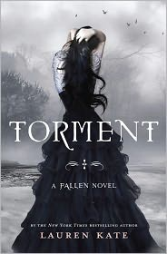
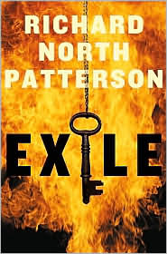
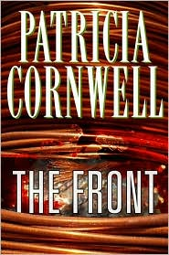

Top Sellers
|  |  | ||
|  |
Torment (Lauren Kate's Fallen Series #2)
$10.42Hell on earth.That's what it's like for Luce to be apart from her fallen angel boyfriend, Daniel.It took them an eternity to find one another, but now he has told her he must go away. Just long enough to hunt down the Outcasts'immortals who want to kill Luce. Daniel hides Luce at Shoreline, a school on the rocky California coast with unusually gifted students: Nephilim, the offspring of fallen angels and humans.At Shoreline, Luce learns what the Shadows are, and how she can use them as windows to her previous lives. Yet the more Luce learns, the more she suspects that Daniel hasn't told her everything. He's hiding something'something dangerous.What if Daniel's version of the past isn't actually true? What if Luce is really meant to be with someone else? The second novel in the addictive FALLEN series . . . where love never dies.
MoreRobopocalypse
$28.80They are in your house. They are in your car. They are in the skies…Now they're coming for you. In the near future, at a moment no one will notice, all the dazzling technology that runs our world will unite and turn against us. Taking on the persona of a shy human boy, a childlike but massively powerful artificial intelligence known as Archos comes online and assumes control over the global network of machines that regulate everything from transportation to utilities, defense and communication. In the months leading up to this, sporadic glitches are noticed by a handful of unconnected humans – a single mother disconcerted by her daughter's menacing “smart†toys, a lonely Japanese bachelor who is victimized by his domestic robot companion, an isolated U.S. soldier who witnesses a ‘pacification unit' go haywire – but most are unaware of the growing rebellion until it is too late. When the Robot War ignites -- at a moment known later as Zero Hour -- humankind will be both decimated and, possibly, for the first time in history, united. Robopocalypse is a brilliantly conceived action-filled epic, a terrifying story with heart-stopping implications for the real technology all around us…and an entertaining and engaging thriller unlike anything else written in years. DANIEL H. WILSON earned a Ph.D. in robotics from Carnegie...
MoreBloodmoney
$15.12Someone in Pakistan is killing the members of a new CIA intelligence unit that is trying to buy peace with America's enemies. It falls to Sophie Marx, a young CIA officer with a big chip on her shoulder, to figure out who's doing the killing and why. Her starting point is Alphabet Capital, the London hedge fund that has been providing cover for this secret operation, but the investigation soon widens to include the capitals of the Middle East and the cruel hills of South Waziristan.Sophie thinks she has the backing of her hard-nosed boss, Jeffrey Gertz, and his genial mentor at headquarters, Cyril Hoffman. In addition, she gets help from the well-mannered lieutenant general heading Pakistan's Inter-Services Intelligence Directorate. But the closer Sophie gets to her quarry, the more she realizes that nothing in this gallery of mirrors is quite what it seems. This is a theater of violence and retribution, in which the last act is one that Sophie could not have imagined.David Ignatius has written a disturbing and compelling novel where the price of unchecked government is paid in blood, and peace can be bought only through betrayal.
MoreExile
$5.98David Wolfe is a successful American lawyer being primed for a run for Congress. But when the phone rings and he hears the voice of Hana Arif'the Palestinian woman with whom he had a secret affair in law school'he begins a completely unexpected journey.The next day, the prime minister of Israel is assassinated by a suicide bomber while visiting San Francisco. Soon, Hana is accused of being the mastermind behind the murder. Now David faces an agonizing choice: Will he, a Jew, represent her?The most challenging case of David's career requires that he delve deep into the lives of Hana and her militant Palestinian husband, all the way back to Israel and the West Bank. There he uncovers the couple's dangerous connections…culminating in an explosive trial where the stakes are Hana's life'and the future of two peoples.
MoreThe Front (Win Garano Series #2)
$3.99When Patricia Cornwell introduced the quicksilver, cut-to-the-bone style and extraordinary cast of characters of At Risk, the result was electrifying: 'At Risk is Cornwell's finest novel. It works in every way possible -- fascinating characters, solid plot, great pacing and expertlycrafted prose' (St. Louis Post-Dispatch); 'Absolutely the best. Here's hoping we'll see more of Win, Monique, Nana and Sykes in the coming years. They are the best characters to emerge from Cornwell's creative pen since . . . well, Kay Scarpetta' (The Denver Post).At Risk featured Massachusetts state investigator Win Garano, a shrewd man of mixed-race background and a not inconsiderable chip on his shoulder; District Attorney Monique Lamont, a hard-charging woman with powerful ambitions and a troubling willingness to cut corners; and Garano's grandmother, who has certain unpredictable talents that you ignore at your peril.And in The Front, peril is what comes to them all. D.A. Lamont has a special job for Garano. As part of a new public relations campaign about the dangers of declining neighborhoods, she's sending him to Watertown to 'come up with a drama,' and she thinks she knows just the case that will serve. Garano is very skeptical, because he knows that Watertown is also the home base for a loose association of municipal police departments called the FRONT, set up in order that they don'thave to be so dependent on the state -- much to Lamont's...
MoreFrom This Moment On
$18.15The world may know Shania Twain as many things: a music legend, a mother, and recently, a fixture in the news for her painful, public divorce and subsequent marriage to a cherished friend. But in this extraordinary autobiography, Shania reveals that she is so much more. She is Eilleen Twain, one of five children born into poverty in rural Canada, where her family often didn't have enough food to send her to school with lunch. She's the teenage girl who helped her mother and young siblings escape to a battered woman's shelter to put an end to the domestic violence in her family home. And she's the courageous twenty-two-year-old who sacrificed to keep her younger siblings together after her parents were tragically killed in a car accident.Shania Twain's life has evolved from a series of pivotal moments, and in unflinching, heartbreaking prose, Shania spares no details as she takes us through the events that have made her who she is. She recounts her difficult childhood, her parents' sudden death and its painful aftermath, her dramatic rise to stardom, her devastating betrayal by a trusted friend, and her joyful marriage to the love of her life. From these moments, she offers profound, moving insights into families, personal tragedies, making sense of one's life, and the process of healing. Shania Twain is a singular, remarkable woman who has faced enormous odds and downfalls, and her extraordinary story will provide wisdom, inspiration,...
MoreDead or Alive
$16.63For years, Jack Ryan, Jr. and his colleagues at the Campus have waged an unofficial and highly effective campaign against the terrorists who threaten western civilization. The most dangerous of these is the Emir. This sadistic killer has masterminded the most vicious attacks on the west and has eluded capture by the world's law enforcement agencies. Now the Campus is on his trail. Joined by their latest recruits, John Clark and Ding Chavez, Jack Ryan, Jr. and his cousins, Dominick and Brian Caruso, are determined to catch the Emir and they will bring him in . . . dead or alive.
MoreV for Vendetta
$11.89One of the accomplishments that cemented Alan Moore's reputation - soon to be a major motion picture - returns in a stunning new edition. A terrifying portrait of totalitarianism and resistance superbly illustrated by artist David Lloyd, this edition includes everything from the VERTIGO trade paperback as well as a new 8-page section featuring early sketches and art by Lloyd.
MoreTorment (Lauren Kate's Fallen Series #2)
$10.42Hell on earth.That’s what it’s like for Luce to be apart from her fallen angel boyfriend, Daniel.It took them an eternity to find one another, but now he has told her he must go away. Just long enough to hunt down the Outcasts—immortals who want to kill Luce. Daniel hides Luce at Shoreline, a school on the rocky California coast with unusually gifted students: Nephilim, the offspring of fallen angels and humans.At Shoreline, Luce learns what the Shadows are, and how she can use them as windows to her previous lives. Yet the more Luce learns, the more she suspects that Daniel hasn’t told her everything. He’s hiding something—something dangerous.What if Daniel’s version of the past isn’t actually true? What if Luce is really meant to be with someone else? The second novel in the addictive FALLEN series . . . where love never dies.
MoreRobopocalypse
$28.80They are in your house. They are in your car. They are in the skies…Now they’re coming for you. In the near future, at a moment no one will notice, all the dazzling technology that runs our world will unite and turn against us. Taking on the persona of a shy human boy, a childlike but massively powerful artificial intelligence known as Archos comes online and assumes control over the global network of machines that regulate everything from transportation to utilities, defense and communication. In the months leading up to this, sporadic glitches are noticed by a handful of unconnected humans – a single mother disconcerted by her daughter’s menacing “smart” toys, a lonely Japanese bachelor who is victimized by his domestic robot companion, an isolated U.S. soldier who witnesses a ‘pacification unit’ go haywire – but most are unaware of the growing rebellion until it is too late. When the Robot War ignites -- at a moment known later as Zero Hour -- humankind will be both decimated and, possibly, for the first time in history, united. Robopocalypse is a brilliantly conceived action-filled epic, a terrifying story with heart-stopping implications for the real technology all around us…and an entertaining and engaging thriller unlike anything else written in years. DANIEL H. WILSON earned a Ph.D. in robotics from Carnegie...
MoreBloodmoney
$15.12Someone in Pakistan is killing the members of a new CIA intelligence unit that is trying to buy peace with America's enemies. It falls to Sophie Marx, a young CIA officer with a big chip on her shoulder, to figure out who's doing the killing and why. Her starting point is Alphabet Capital, the London hedge fund that has been providing cover for this secret operation, but the investigation soon widens to include the capitals of the Middle East and the cruel hills of South Waziristan.Sophie thinks she has the backing of her hard-nosed boss, Jeffrey Gertz, and his genial mentor at headquarters, Cyril Hoffman. In addition, she gets help from the well-mannered lieutenant general heading Pakistan's Inter-Services Intelligence Directorate. But the closer Sophie gets to her quarry, the more she realizes that nothing in this gallery of mirrors is quite what it seems. This is a theater of violence and retribution, in which the last act is one that Sophie could not have imagined.David Ignatius has written a disturbing and compelling novel where the price of unchecked government is paid in blood, and peace can be bought only through betrayal.
MoreExile
$5.98David Wolfe is a successful American lawyer being primed for a run for Congress. But when the phone rings and he hears the voice of Hana Arif—the Palestinian woman with whom he had a secret affair in law school—he begins a completely unexpected journey.The next day, the prime minister of Israel is assassinated by a suicide bomber while visiting San Francisco. Soon, Hana is accused of being the mastermind behind the murder. Now David faces an agonizing choice: Will he, a Jew, represent her?The most challenging case of David's career requires that he delve deep into the lives of Hana and her militant Palestinian husband, all the way back to Israel and the West Bank. There he uncovers the couple's dangerous connections…culminating in an explosive trial where the stakes are Hana's life—and the future of two peoples.
MoreThe Front (Win Garano Series #2)
$3.99When Patricia Cornwell introduced the quicksilver, cut-to-the-bone style and extraordinary cast of characters of At Risk, the result was electrifying: 'At Risk is Cornwell's finest novel. It works in every way possible -- fascinating characters, solid plot, great pacing and expertlycrafted prose' (St. Louis Post-Dispatch); 'Absolutely the best. Here's hoping we'll see more of Win, Monique, Nana and Sykes in the coming years. They are the best characters to emerge from Cornwell's creative pen since . . . well, Kay Scarpetta' (The Denver Post).At Risk featured Massachusetts state investigator Win Garano, a shrewd man of mixed-race background and a not inconsiderable chip on his shoulder; District Attorney Monique Lamont, a hard-charging woman with powerful ambitions and a troubling willingness to cut corners; and Garano's grandmother, who has certain unpredictable talents that you ignore at your peril.And in The Front, peril is what comes to them all. D.A. Lamont has a special job for Garano. As part of a new public relations campaign about the dangers of declining neighborhoods, she's sending him to Watertown to 'come up with a drama,' and she thinks she knows just the case that will serve. Garano is very skeptical, because he knows that Watertown is also the home base for a loose association of municipal police departments called the FRONT, set up in order that they don'thave to be so dependent on the state -- much to Lamont's...
MoreFrom This Moment On
$18.15The world may know Shania Twain as many things: a music legend, a mother, and recently, a fixture in the news for her painful, public divorce and subsequent marriage to a cherished friend. But in this extraordinary autobiography, Shania reveals that she is so much more. She is Eilleen Twain, one of five children born into poverty in rural Canada, where her family often didn’t have enough food to send her to school with lunch. She’s the teenage girl who helped her mother and young siblings escape to a battered woman’s shelter to put an end to the domestic violence in her family home. And she’s the courageous twenty-two-year-old who sacrificed to keep her younger siblings together after her parents were tragically killed in a car accident.Shania Twain’s life has evolved from a series of pivotal moments, and in unflinching, heartbreaking prose, Shania spares no details as she takes us through the events that have made her who she is. She recounts her difficult childhood, her parents’ sudden death and its painful aftermath, her dramatic rise to stardom, her devastating betrayal by a trusted friend, and her joyful marriage to the love of her life. From these moments, she offers profound, moving insights into families, personal tragedies, making sense of one’s life, and the process of healing. Shania Twain is a singular, remarkable woman who has faced enormous odds and downfalls, and her extraordinary story will provide wisdom, inspiration,...
MoreDead or Alive
$16.63For years, Jack Ryan, Jr. and his colleagues at the Campus have waged an unofficial and highly effective campaign against the terrorists who threaten western civilization. The most dangerous of these is the Emir. This sadistic killer has masterminded the most vicious attacks on the west and has eluded capture by the world's law enforcement agencies. Now the Campus is on his trail. Joined by their latest recruits, John Clark and Ding Chavez, Jack Ryan, Jr. and his cousins, Dominick and Brian Caruso, are determined to catch the Emir and they will bring him in . . . dead or alive.
MoreV for Vendetta
$11.89One of the accomplishments that cemented Alan Moore's reputation - soon to be a major motion picture - returns in a stunning new edition. A terrifying portrait of totalitarianism and resistance superbly illustrated by artist David Lloyd, this edition includes everything from the VERTIGO trade paperback as well as a new 8-page section featuring early sketches and art by Lloyd.
More